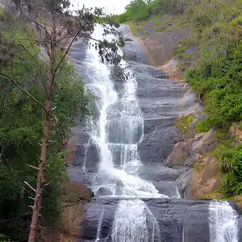

Silver Cascade Falls is a picturesque 180-foot waterfall located on the Madurai-Kodaikanal road, a scenic stop for tourists en route to the popular hill station. Formed by the overflow from the Kodaikanal Lake, the falls drop over rocky cliffs into a pool below, creating a shimmering, silver-like effect that gives the fall its name. The area is surrounded by lush greenery, and visitors can enjoy the sights and sounds of the cascading water, take photographs, or even have a dip in the falls during pleasant temperatures. Nearby stalls also offer snacks, juices, and local hill fruits, making it a convenient and enjoyable spot to take a break.
